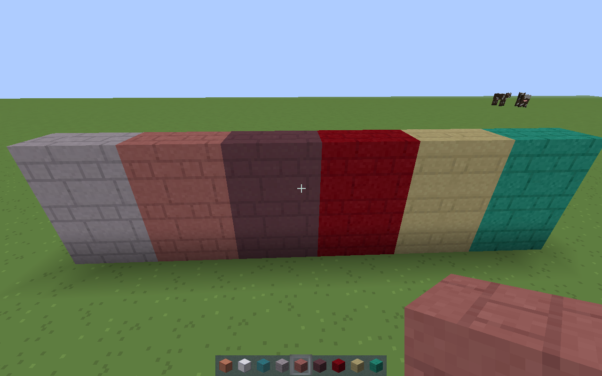

Textura CrazzyMCPE para Minecraft(Java)

Presentando la versión para Minecraft(Java) de la textura CrazzyMCPE.
esta futura versión será una versión final de esta textura que ya estaba en beta en Pocket Edition.